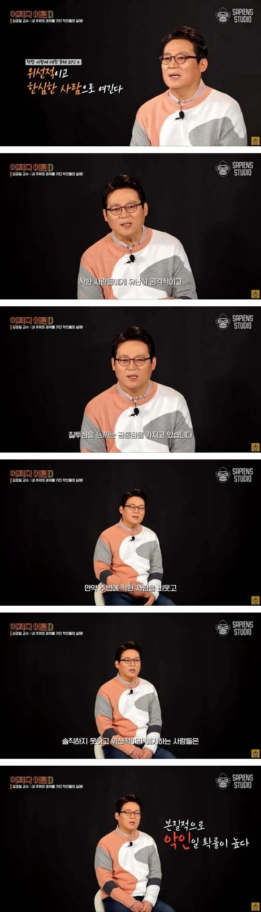

인지심리학자가 말하는 악인의 공통점
댓글
그럼 본질적으로 악인이지만
노력으로 극복할 수 있나?
성격적인 부분이 바뀌기 제일 어려운 부분임
그 사람의 디폴트값 같은거라
선/악도 성격범주에 들어가나....?
선악이란 그냥 도덕가치규범이잖아
파서낵스씨의 가르침을 기억해
평생을 가식 위선 의 가면을 쓰고 사는거지
악인드립넷
커뮤니티에 널림
비슷한 글이 가끔씩 올라오고 최근에도 봤는데, 식당에서 감사합니다 하는 거 가지고
위선적이니, 남들 시선 신경써서 하는 거니 그런 댓글 다는 사람 꼭 나오더라
악인이라니 그렇게 표현하지 말고 걍 좆찐따라고 부르자
그런데 그게 착한사람인지 개병신고문관인지 어떻게 분간 함? 회사에서는 주로 후자던데
분간 잘 하고 있네
질투심은 왜 느끼는거지? 자기는 그렇게 못해서?
똥을 싸면 항문이 열린다
악인드립넷
근데 본인이 진짜 착하다기보단 일을 존나게 못해서 착할수밖에없는 사람도 꽤 있더라고
일잘하고 착한사람이 진짜 착한사람이라고 생각함
그냥 개붕이잖아